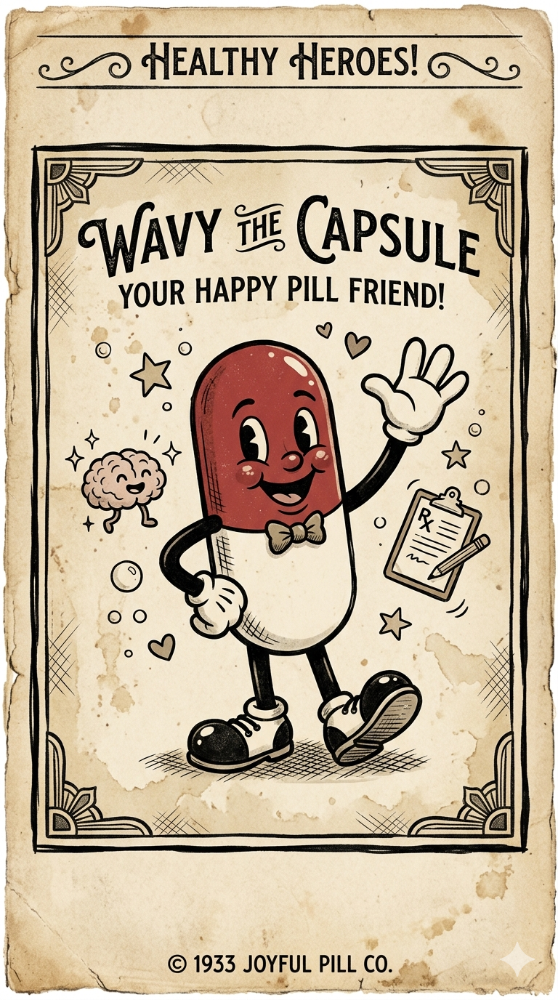

Los medicamentos psiquiátricos llevan desde 1950 siendo el tratamiento estándar de la psiquiatría. A pesar de los avances científicos dentro de los mismos, la psiquiatría mantiene el mismo problema: llevar más de 70 años sin poder aún ofrecer un tratamiento con el que se pueda hacer un pronóstico adecuado para el paciente.